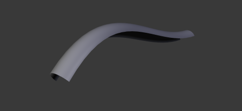
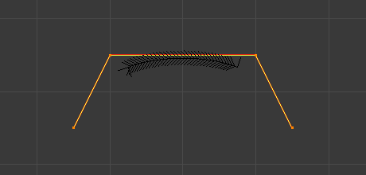

Дані Об'єкта -- Object Data¶
Властивості кривої можуть бути задані у вкладці «Дані Об’єкта» -- Object Data редактора Properties (іконка вкладки підсвічена синім, що показано на ілюстрації нижче).

Форма -- Shape¶
Панель «Форма» -- Shape для кривих.
- Розмірності -- Dimensions
Стандартно, нові криві установлюються за типом як 3D, що означає, що керувальні точки можуть поміщатися будь-де у 3D просторі. Криві можуть також задаватися за типом як 2D, що обмежує розміщення керувальних точок локальною осями XY кривої.
2D, 3D
- Роздільність -- Resolution
Властивість Resolution визначає кількість точок, що обчислюються між кожною парою керувальних точок. Криві можуть бути зроблені більш або менш плавними шляхом збільшення або зменшення роздільності, відповідно. Устава «Передогляд U» -- Preview U визначає роздільність у 3D Огляді -- 3D View, тоді як устава «Рендер U» -- Render U визначає роздільність рендерингу, зображування кривої. Якщо Render U задано у нуль (0), то устава Preview U використовується як для 3D View, так і для рендера.

Криві з роздільністю 3.
- Скручення -- Twisting
3D крива має керувальні точки, що не розміщуються на локальній площині XY кривої. Це дає скручення кривої, що може впливати на нормалі кривої. Ви можете змінювати те, як скручення кривої обчислюється, вибираючи з опцій «Мінімум» -- Minimum, «Дотично» - Tangent та «Z-Уверх» -- Z-Up з меню «Метод Скручення».

Криві з методом скручення Tangent.
- Заповнення -- Fill
Заповнення визначає спосіб показування кривої, коли вона скошується (дивіться нижче деталі про Скошування). Коли задано як «Половина» -- Half (стандарт), то крива показується як половина циліндра.
- Заповнити Деформоване -- Fill Deformed
- Заповнює криву після застосування усіх модифікацій, що можуть деформувати криву (тобто, ключів форм та модифікаторів).
Криві із режимом заповнення Half.

Криві із режимом заповнення Full.
{kind=link}
{kind=link}
- Шлях/Деформації Кривої -- Path/Curve-Deform
Ці опції первісно використовуються, коли крива використовується як шлях або коли використовується модифікатор Деформації Кривої -- Curve Deform. Вони керують тим, як об'єкти використовують цю криву, та детально розглядаються на сторінках за відповідними посиланнями нижче.
- Радіус -- Radius
- Змушує деформований об'єкт масштабуватися відповідно до заданого радіуса кривої.
- Розтяг -- Stretch
- Опція Stretch для кривої дозволяє вам мати розтяг або стиск сітьового об'єкта відповідно до всієї кривої.
- Затиск Меж -- Bounds Clamp
- ToDo <2.71.
Анімація Шляхом -- Path Animation¶

Path Animation panel.
Устави Path Animation можуть використовуватися для визначення того, як нащадкові об'єкти рухаються уздовж певного шляху.
- Кадри -- Frames
- Кількість кадрів, що необхідні для проходження цього шляху, яка визначається максимальне значенням устави Evaluation Time.
- Оцінка Часу -- Evaluation Time
- Параметрична позиція уздовж довжини кривої, в якій об'єкт, що слідує по ній, повинен бути (ця позиція обчислюється діленням на значення Path Length). Стандартно, це пов'язується з глобальною кількістю кадрів, але може бути ключкадровано для отримання більшого керування шляхом анімації.
- Слідування -- Follow
- Змушує нащадків шляху кривої обертатися уздовж кривини шляху.
Ghi chú
Небажано, але все ще доступно для використання. Більш надійний метод -- Примус «Слідування Шляхом» -- Follow Path Constraint.
Example¶
This example shows you how setup a Path Animation.
- Add an object you want to animate and a path along which this object will move. In this example it's the Monkey and the Bézier Circle.
- To parent the monkey to the Bézier circle, first select the monkey then the curve (so that the curve is the active object), press Ctrl-P and select Follow Path. It will automatically animate Evaluation Time and activate Follow option in the Path Animation panel.
- Select the monkey and Clear Origin Alt-O to reset its offset.
- You can change the orientation of the monkey by changing the Tracking Axes under Relations Extras (with the monkey selected).

The final result. |
{kind=link}
Активний Сплайн -- Active Spline¶

Панель Active Spline для кривих.
Панель Active Spline стає доступною при перемкненні у режим правки Edit Mode.
- Зациклення -- Cyclic
- Закриває, зациклює криву.
- Роздільність -- Resolution
- Змінює плавність кожного сегмента шляхом зміни кількості підподілів.
- Інтерполяція -- Interpolation
- Похил -- Tilt
- Змінює те, як обчислюється похил сегмента.
- Радіус -- Radius
- Змінює те, як обчислюється радіус скошеної кривої. Ці ефекти легше бачити після Стоншення/Потовщення -- Shrinking/Fattening керувальної точки, Alt-S.
- Згладження -- Smooth
- Згладжує нормалі кривої.
Криві НОРБС -- NURBS Curves¶
Панель Active Spline для НОРБС.
- Вузлики -- Knots
Однією з характеристик об'єкта НОРБС є «вектор вузлика» -- knot vector. Це послідовність чисел, що використовуються для визначення впливу керувальних точок на криву. Хоча ви не можете редагувати вектори вузликів безпосередньо, ви можете впливати на них через опції Endpoint та Bézier на панелі Active Spline. Зауважте, що устави Endpoint та Bézier застосовуються тільки до відкритих, незациклених кривих NURBS.
- Зациклення -- Cyclic
Робить криву НОРБС зацикленою.
Стандартна крива НОРБС.

Крива NURBS з увімкненим Cyclic.
- Безьє -- Bézier
- Makes the NURBS curve act like a Bézier curve. The NURBS control points act like Free handles of Bézier curve. Depending on the Order, 3 or 4 control points form one curve segment. Cyclic and Endpoint must be disabled for this option to work.
- Кінцева точка -- Endpoint
Змушує криву контактувати з кінцевими керувальними точками. Опція Cyclic повинна бути вимкнена, щоб ця опція працювала.

Крива НОРБС з увімкненою Endpoint.
{kind=link}
- Порядок -- Order
Порядок кривої НОРБС визначає площу впливу керувальних точок над кривою. Вищі значення порядку означають, що одинична керувальна точка має більший вплив над більшою відносною частиною кривої. Допустимий діапазон значень Order від 2 до 6, залежно від кількості керувальних точок, присутніх у кривій.

Криві НОРБС з порядком 2.